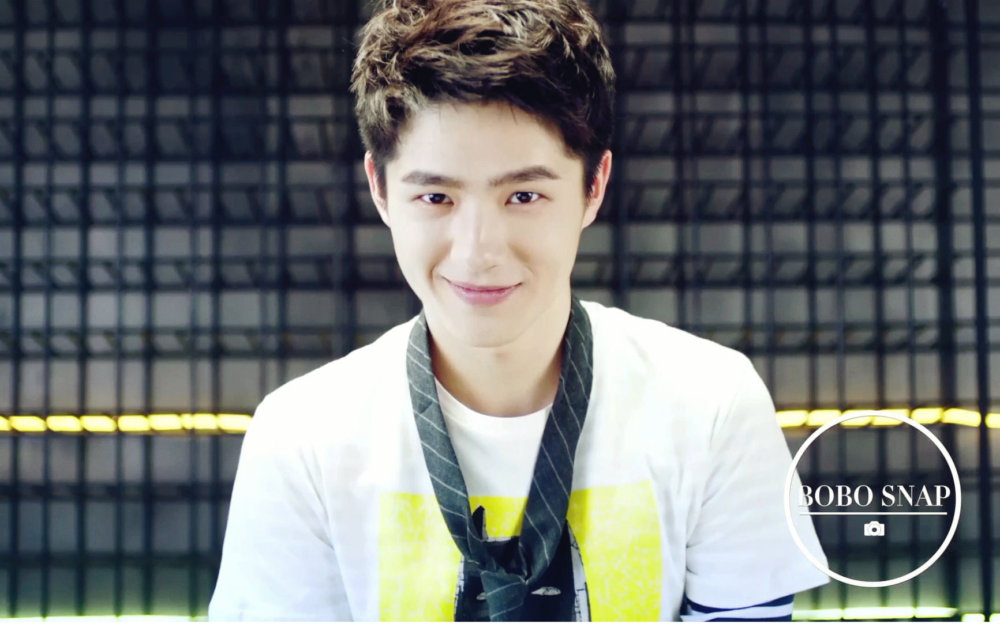
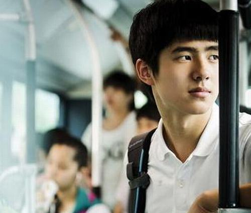
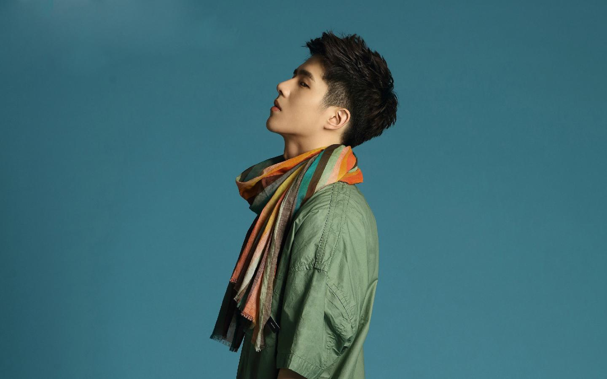

集才华与美貌于一身
刘昊然turbo，作为一名二十岁的大学生，幽默而稳重，率真而机智，展现出自己个性独立、有想法、敢说话等成熟气质一面，备受观众以及网友赞许。

刘昊然的二十岁
主要成就
2014年，主演电影《北京爱情故事》出道，凭借该片入围第21届北京大学生电影节最佳新人奖
第20届华鼎奖中国最佳新人奖
2016年7月，以专业和文化双料第一名的成绩被中央戏剧学院录取
入围第19届上海国际电影节亚洲新人奖最佳男演员奖
12月5日，刘昊然获得尖叫2016爱奇艺之夜年度最受欢迎新人奖
基本信息
刘昊然，1997年10月10日出生于河南省平顶山市，中国内地男演员，就读于中央戏剧学院表演系本科
2013年3月，还在读高一的刘昊然被陈思诚选中，得到了主演电影《北京爱情故事》的机会，并以此开始了他的演艺之路

刘昊然小学毕业后考上北京舞蹈学院附中，11岁就开始了“北漂”的求学生活，年纪尚小的他曾因为不适应，在入校的第一天就写好了退学申请书，但最终还是咬牙坚持了下来
2015年5月，主演悬疑喜剧电影《唐人街探案》，饰演天才少年秦风，刘昊然作为双男主角之一和王宝强组成唐人街神探搭档，并凭借该电影获得第20届华鼎奖中国最佳新人奖和2016中国电影指数盛典最佳银幕新锐演员奖，并入围第19届上海国际电影节亚洲新人奖最佳男演员和第24届上海影评人奖最佳新人男演员奖。

2017年，10月31日，刘昊然个人首本著作《见风》出版发行，该书是他20岁的小结，记录他成长经历
2017年2月，刘昊然作为中戏荣誉校友，与巩俐、章子怡、姜文等演艺界前辈们一起入选在2017年中央戏剧学院招生宣传片上
10月28——11月3日，刘昊然在北京悦·美术馆举办了为期一周的“刘昊然个人摄影展SWAG SOLO EXHIBITION”
10月31日在悦·美术馆内举办刘昊然“好燃Update2.0” 20岁生日会